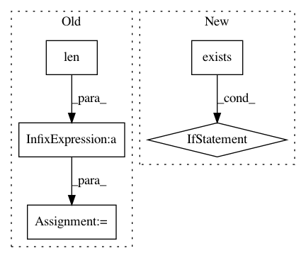

657370491536cbb32662292089769c8e5c04468d,mlflow/store/hdfs_artifact_repo.py,HdfsArtifactRepository,list_artifacts,#HdfsArtifactRepository#Any#,70
Before Change
["conda.yaml", "MLmodel", "model.pkl"]
hdfs_base_path = _resolve_base_path(self.path, path)
base_path_len = len(hdfs_base_path) + 1
with hdfs_system(host=self.host, port=self.port) as hdfs:
paths = []
for path, is_dir, size in self._walk_path(hdfs, hdfs_base_path):
After Change
with hdfs_system(host=self.host, port=self.port) as hdfs:
paths = []
if hdfs.exists(hdfs_base_path):
for file_detail in hdfs.ls(hdfs_base_path, detail=True):
file_name = file_detail.get("name")
// Strip off anything that comes before the artifact root e.g. hdfs://name
offset = file_name.index(self.path)
rel_path = _relative_path_remote(self.path, file_name[offset:])
is_dir = file_detail.get("kind") == "directory"
size = file_detail.get("size")
paths.append(FileInfo(rel_path, is_dir, size))
return sorted(paths, key=lambda f: paths)
def _walk_path(self, hdfs, hdfs_path):
if hdfs.exists(hdfs_path):
In pattern: SUPERPATTERN
Frequency: 3
Non-data size: 5
Instances
Project Name: mlflow/mlflow
Commit Name: 657370491536cbb32662292089769c8e5c04468d
Time: 2019-09-04
Author: 47035943+ahutterTA@users.noreply.github.com
File Name: mlflow/store/hdfs_artifact_repo.py
Class Name: HdfsArtifactRepository
Method Name: list_artifacts
Project Name: eriklindernoren/PyTorch-YOLOv3
Commit Name: 7fffa98b9166a03b4a53fb40202d97b09e8e9036
Time: 2018-05-29
Author: eriklindernoren@gmail.com
File Name: utils/datasets.py
Class Name: ListDataset
Method Name: __getitem__
Project Name: nipy/dipy
Commit Name: a0e81d626e2264fc52fee60b32e8b6f1a2d9f2a7
Time: 2016-01-11
Author: matthieu.dumont@usherbrooke.ca
File Name: dipy/workflow/segment.py
Class Name:
Method Name: median_otsu_bet